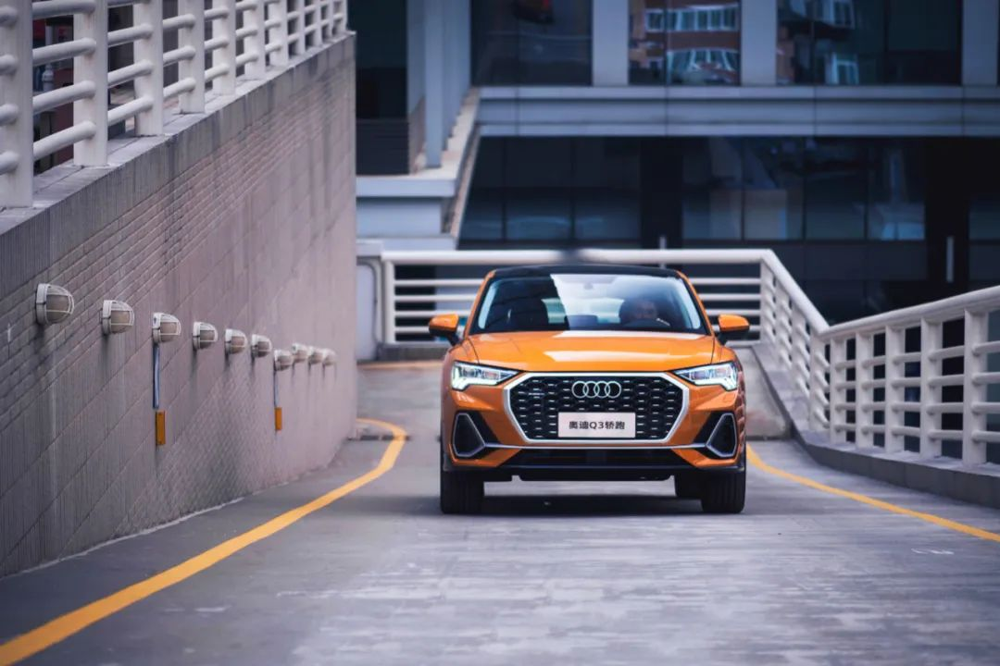

5月29日，以上海为奥迪Q3 Sportback发布主会场，同步开启杭州“心动花海艺术展”、成都“美背舞快闪”、深圳“城市炫光夜跑”活动，四城联动。奥迪通过新颖的VLOG线上直播方式，发布了一款充满年轻时尚感的运动轿跑SUV车型——奥迪Q3 Soprtback，它的售价区间为28.73万元-36.18万元，有5个配置车型供消费者选择。它的设计灵感来源于达喀尔拉力赛车，拥有一副“充满运动感的身材”。
我们从小耳濡目染的理念就是轿车应该是四平八稳的三厢的、跑车应该是低矮流畅的、SUV应该是方方正正的…越是如此的环境之下更让人对于打破束缚的向往，Q3 Sportback会不会是这样的一个“小伙子”呢？
奥迪Q3 Sportback前端的肌肉感源自于凸出的轮眉和粗犷的翼子板空气导流槽，且翼子板空气导流槽充分考虑空气流体力学，对迎风面空气进行切割。掀背造型的车顶线在通过B柱后迅速下滑，在车尾处与后侧围空气导流槽融合，营造肌肉力量感的同时又不失整车的优雅。
跟其他汽车品牌一样的是，跨界车的设计语言在Q3 Sportback身上被展现出来，小溜背的出现，实际控制着整个车的比例感。如果观察足够仔细，你能发现设计师故意将车轮往四角处推进，这样做的好处是，让视觉重心往前移，且线条舒展，观感不难受。如今这款Q3 Sportback，则完完全全是为了更具年轻的美去打造的。
我们希望SUV里面乘坐空间要够大，尤其要高，Q3 Sportback偏偏把整车的车身高度降低了3cm；我们希望SUV后备箱空间也要用到，Q3 Sportback偏偏要把D柱的倾角拉到了回旋镖一样的大角度把尾箱空间压缩了一大部分；我们习惯看到SUV车顶一定有个行李导轨，而Q3 Sportback直接把这个设计拿掉，让车顶变得更加流畅，更有轿跑的感觉；尾箱盖logo上方多了一条弧线的凸起，更有跑车的味道。
在内饰方面，奥迪Q3 Sportback在继承奥迪Q3内饰设计的基础上，对细节进行了调整，增强了车内的运动氛围。例如平底式运动方向盘、中央储物格无线充电，装饰板上发光“quattro”logo都在奥迪Q3轿跑配备。
另外，奥迪Q3 Sportback全系标配拥有30色灯光可选的环境氛围灯、虚拟座舱，奥迪MMI人机交互系统、高解像素信息娱乐触控屏幕、带有“S”浮雕徽标的运动座椅，座椅采用了对比色条及对比色缝线装饰。
作为一款豪华轿跑SUV，智能丰富的配置肯定不能少。奥迪Q3 Sportback配备了侧向辅助系统、开门警示系统、奥迪整体式预安全系统前部版、主动车道保持、后方通行警示系统、带停走功能的自适应巡航控制系统、陡坡缓降系统、智能泊车系统、360全景影像等驾驶辅助系统，让驾驶变得更加轻松，安全性也进一步得到提升。
奥迪Q3 Sportback外观运动味那么浓，强劲动力就必不可少。奥迪Q3轿跑1.4T版本搭载的是EA211发动机，最大功率110kW，最大扭矩250N·m；2.0T高功率版本搭载第三代EA888发动机，最大功率162kW，最大扭矩350N·m。
全系匹配一台7速S tronic湿式双离合变速器，动力响应快，换挡平顺。其中，顶配车型搭载最新一代奥迪横置发动机平台四驱系统，标配越野、舒适、自动、动态、高效五种奥迪驾驶模式，可以为驾驶员带来更多的驾驶乐趣。
在墨守成规的规则下生活，我们或多或少会感受到孤独，当我们听到Sam Smith用柔美的声线唱着stay with me，还有The Cranberries主唱Dolores Mary撕心裂肺的嘶喊着Zombie的时候，我们才发现原来可以变得不一样，可以如此美妙和灿烂。
像这样一台有别于传统的轿跑SUV奥迪Q3 Sportback，它能否令你满意呢？